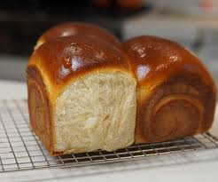

Homepage
Milk Bread
Japanese milk bread

Ingredients
For the Tangzhong
- 2 tablespoon bread flour (2tbsp is approx 20g)
- 90 ml water
For rest of loaf
- 300 g bread flour (300g is approx 2 cups plus 2 tbsp)
- 7 g fast acting yeast (technically a little under but can use 1 sachet, ¼oz/ 7g)
- 120 ml milk (lukewarm or room temp, but not hot)
- 28 g unsalted butter melted but not hot
- 5 ml salt
- 42 g sugar (caster sugar/fine)
- 1 egg
To glaze
- 1 egg (lighty beaten - won't need all)
Instructions
For tangzhong - made slightly ahead
- Put water and flour for tangzhong in a small pan. Mix until smooth and no lumps remain - do this before turning on the heat.
- Warm the flour paste gently over a medium-low heat until it thickens, stirring constantly. You should see trails left by the spoon/whisk as you stir it. Set the pan aside to cool.
To make bread
- Measure out the remaining ingredients into a large bowl (flour, yeast, milk, melted butter, sugar, salt and egg). Add the cooled tangzhong - I gently beat the egg into the tangzhong first to both save the tangzhong being too thick and help egg to mix better but you don't need to, just make sure you mix it well. Mix all the ingredients together then knead, either in mixer or by hand on a floured surface. Add a little more flour if needed.
- Once the dough is no longer sticky, transfer to a lightly oiled bowl. Cover and leave to rise in a relatively warm place until doubled - around 1 hour.
- Once it has risen, knock back the dough, divide into three pieces. Set the other pieces to one side and roll one piece into an oval.
- Fold one side of dough over to halfway across the remaining dough then fold the other side on top so you have three layers (see photos above). Gently roll slightly, if needed, then roll up the piece of dough as you would a cinnamon roll.
- Repeat with the other pieces of dough then put all three rolls of dough in an oiled loaf pan - 9x5in (22x12cm) or slightly smaller.
- Cover and leave to rise again until the loaf is just reaching the top of the pan. Preheat oven to 350F/175C. Lightly beat the egg and brush the top of the loaf with egg wash.
- Bake the loaf for approx 30 minutes until golden brown. If it browns too fast, tent with foil for the last part of cooking. Turn onto a cooling rack to cool before slicing.